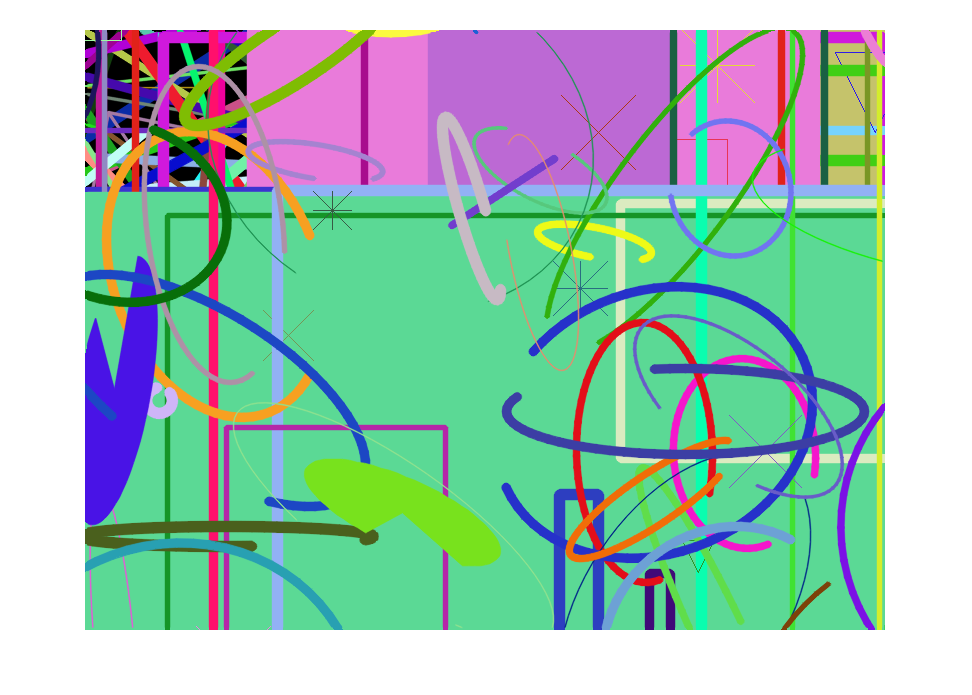

Demonstration of drawing functions
This program demonstrates OpenCV drawing and text output functions.
Sources:
- https://github.com/opencv/opencv/blob/3.2.0/samples/cpp/drawing.cpp
- https://docs.opencv.org/3.2.0/df/d61/tutorial_random_generator_and_text.html
- https://docs.opencv.org/3.2.0/dc/da5/tutorial_py_drawing_functions.html
- https://github.com/opencv/opencv/blob/3.2.0/samples/cpp/tutorial_code/core/Matrix/Drawing_2.cpp
Contents
Options
DELAY = 5e-3; % pause delay (sec) NUMBER = 100; % number of repeats lineType = {'LineType','AA'}; % change to 8 to see non-antialiased graphics W = 800; H = 600; % width/height of output image img = zeros(H,W,3,'uint8'); % rng xlims = fix([-W/2 W*3/2]); ylims = fix([-H/2 H*3/2]); clr = @() randi([0 255], [1 3], 'uint8'); markers = '+x*ds^v'; marker = @() markers(randi([1 numel(markers)])); % prepare plot hImg = imshow(img);
Lines
for i=1:NUMBER*2 pt1 = [randi(xlims) randi(ylims)]; pt2 = [randi(xlims) randi(ylims)]; thick = randi([1 10]); if rand < 0.5 img = cv.line(img, pt1, pt2, ... 'Color',clr(), 'Thickness',thick, lineType{:}); else img = cv.arrowedLine(img, pt1, pt2, ... 'Color',clr(), 'Thickness',thick, lineType{:}); end set(hImg, 'CData',img); pause(DELAY); end
Rectangles
for i=1:NUMBER*2 pt1 = [randi(xlims) randi(ylims)]; pt2 = [randi(xlims) randi(ylims)]; thick = max(randi([-3 10]), -1); if rand < 0.5 img = cv.rectangle(img, pt1, pt2, ... 'Color',clr(), 'Thickness',thick, lineType{:}); else img = cv.drawMarker(img, pt1, ... 'Color',clr(), 'MarkerType',marker(), 'MarkerSize',randi([30 80])); end set(hImg, 'CData',img); pause(DELAY); end

Ellipses
for i=1:NUMBER center = [randi(xlims) randi(ylims)]; ax = randi([0 200], [1 2]); a = randi([0 180]); thick = randi([-1 9]); img = cv.ellipse(img, center, ax, ... 'Angle',a, 'StartAngle',a-100, 'EndAngle',a+200, ... 'Color',clr(), 'Thickness',thick, lineType{:}); set(hImg, 'CData',img); pause(DELAY); end
Polygons
for i=1:NUMBER pts = arrayfun(@(~) [randi(xlims, [3 1]) randi(ylims, [3 1])], 1:2, ... 'Uniform',false); thick = randi([1 10]); img = cv.polylines(img, pts, ... 'Closed',true, 'Color',clr(), 'Thickness',thick, lineType{:}); set(hImg, 'CData',img); pause(DELAY); end
Filled Polygons
for i=1:NUMBER pts = arrayfun(@(~) [randi(xlims, [3 1]) randi(ylims, [3 1])], 1:2, ... 'Uniform',false); img = cv.fillPoly(img, pts, ... 'Color',clr(), lineType{:}); set(hImg, 'CData',img); pause(DELAY); end
Circles
for i=1:NUMBER center = [randi(xlims) randi(ylims)]; radius = randi([0 300]); thick = randi([-1 9]); img = cv.circle(img, center, radius, ... 'Color',clr(), 'Thickness',thick, lineType{:}); set(hImg, 'CData',img); pause(DELAY); end

Text
str = 'Testing text rendering'; fonts = strcat('Hershey', {'Simplex', 'Plain', 'Duplex', 'Complex', ... 'Triplex', 'ComplexSmall', 'ScriptSimplex', 'ScriptComplex'}); for i=1:NUMBER pt = [randi(xlims) randi(ylims)]; font = randi([1 numel(fonts)]); scale = randi([0 100])*0.05 + 0.1; thick = randi([1 10]); img = cv.putText(img, str, pt, ... 'FontFace',fonts{font}, 'FontScale',scale, ... 'Color',clr(), 'Thickness',thick, lineType{:}); set(hImg, 'CData',img); pause(DELAY); end
Text Animation
str = 'OpenCV forever!'; opts = {'FontFace','HersheyComplex', 'FontScale',2.5, 'Thickness',5}; textsize = cv.getTextSize(str, opts{:}); pt = fix(([W H] - textsize)/2); for i=0:2:254 img = cv.putText(img - i, str, pt, ... 'Color',[255 i i], opts{:}, lineType{:}); set(hImg, 'CData',img); pause(DELAY); end